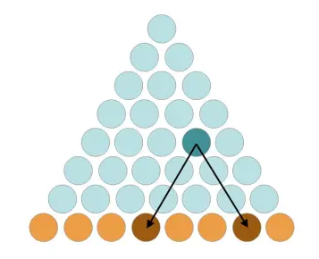
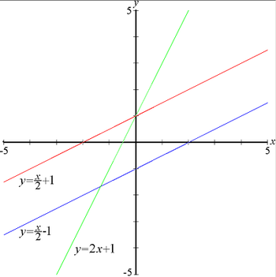
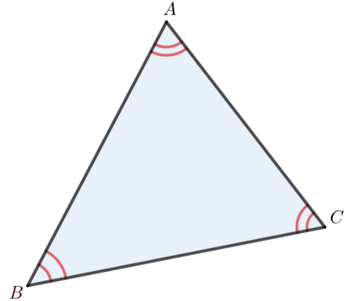
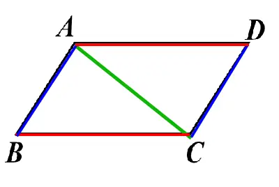

SPED
HOME
情緒紀錄
7數
8數
9數
7英
8英
9英
7國
8國
9國
會考專區
學習策略
8下數學-解題步道

第1章
1-1認識數列等差數列
1-2等差級數
1-3等比數列

第2章
2線型函數與其圖形

第3章
3-1內角與外角
3-2基本尺規作圖
3-3三角形全等
3-4中垂線角平分線
3-5三角形邊角

第4章
4-1平行線截角性質
4-2平行四邊形
4-3特殊四邊與梯形
8下數學-挑戰之地
第1章 數列與級數
01數字規律
02判別等差
03等差數列的第n項
04等差第n項列式
05求等差中項
06等差級數和
07求等比第n項
08等比中項
第2章 線型函數圖形
01求函數值
02函數值相等
第3章 內角與外角
01餘角補角對頂角
02三角形內角和
03三角形外角和
04三角形外角定理
05認識全等
06三角形全等
07三角形全等2
08全等證明
第4章 平行與四邊形
01
02
03
8下數學-學習放映室
第1章
1-1認識數列等差數列
1-2等差級數
1-3等比數列
第2章
2線型函數與其圖形
第3章
3-1內角與外角
3-2基本尺規作圖
3-2基本尺規作圖L
3-3三角形全等
3-4中垂線角平分線
3-5三角形邊角
第4章
4-1平行線截角性質
4-2平行四邊形
4-3特殊四邊與梯形